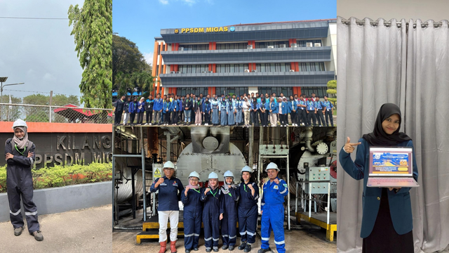
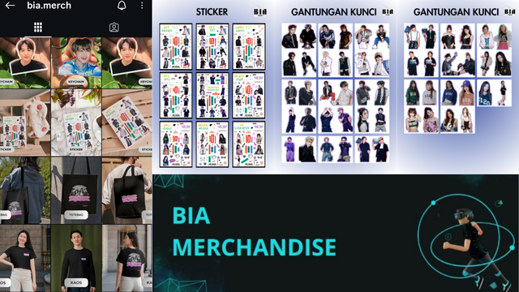
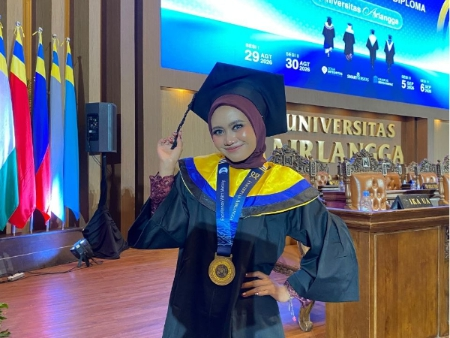
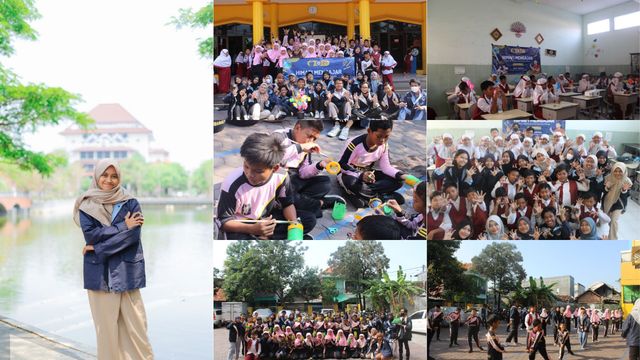

Halo, saya
Lulusan Fisika yang berfokus pada pengolahan data, administrasi, dan analisis untuk menghasilkan informasi yang dapat digunakan sebagai actionable insights.
Saya adalah lulusan Sarjana Fisika dengan ketertarikan kuat di bidang Data Processing dan Administrasi. Selama kuliah, saya terbiasa mengolah dan menganalisis data eksperimen, membuat model Machine Learning, dan mengelola dokumentasi proyek dengan rapi.
Saya senang mengubah data mentah menjadi informasi yang berguna, serta mendukung operasional tim dengan administrasi yang terstruktur. Saya terbiasa bekerja secara sistematis, cepat mempelajari hal baru, dan mampu bekerja secara mandiri maupun dalam tim.

PPSDM Migas, Cepu

Online Shop Bia Merchandise

Universitas Airlangga
Agustus 2022 — Juli 2026
Penjurusan Fisika Instrumentasi dan Komputasi
Mata Kuliah Relevan:
Manajemen Industri, Sistem Cerdas, Fisika Komputasi, Pengolahan Citra Digital, Kewirausahaan, Elektronika, Sensor dan Pengukuran, Mikroprosesor Dan Mikrokontroler, Perangkat Antar Muka, Instrumentasi Industri.

Himpunan Mahasiswa Fisika / Universitas Airlangga
Beberapa proyek personal dan akademik yang pernah saya kerjakan.
Project simulasi Data Entry menggunakan Microsoft Excel yang mengolah 100 data transaksi penjualan. Data raw diproses dan validasi agar lebih konsisten dan siap digunakan.
Tahapan:
1. Melakukan input data transaksi dari raw data ke dalam format tabel yang terstruktur.
2. Memastikan data memiliki format dan penulisan yang konsisten.
3. Menghitung nilai total transaksi.
4. Membuat ringkasan data transaksi menggunakan Microsoft Excel.
Project simulasi Analisis penjualan retail global dengan 1.000 transaksi di 10 negara, menggunakan Excel untuk analisis, dan dashboard interaktif untuk insight bisnis.
Tahapan:
1. Melakukan data enrichment menggunakan VLOOKUP.
2. Menghitung metrik bisnis (Gross Sales, Net Sales, Profit, Margin).
3. Membuat 5 Pivot Table untuk analisis multidimensi.
4. Menyusun dashboard interaktif dengan insight bisnis yang actionable.
Case Study dari RevoU yang bertujuan untuk melatih kemampuan pengolahan data menggunakan SQL, penerapan filter, agregasi, pengelompokan data, serta penyusunan insight yang relevan dengan kebutuhan bisnis.
Proyek ini mencakup tiga pertanyaan bisnis:
1. Tahun dengan total penjualan tertinggi.
2. Negara dengan penjualan Classic Cars tertinggi sepanjang 2004.
3. Product line dengan jumlah barang terjual terbanyak selama September 2003-Maret 2004.
Simulasi Proyek Restaurant Sales Analysis dengan dataset dari Maven Analytics Guided Project Menggunakan MySQL dan Excel.
Tujuan:
1. Menu mana yang harus dipromosikan?
2. Kategori cuisine mana yang paling menguntungkan?
3. Kapan jam sibuk sehingga perlu tambah staff?
4. Bagaimana mengoptimalkan strategi menu untuk naikkan revenue?
Proses Analisis Skripsi:
1. Mengumpulkan dan mengolah data warna RGB dari sensor TCS3200, serta melakukan pra-pemrosesan dan analisis data untuk mengidentifikasi pola karakteristik warna pada setiap tingkat kematangan
pisang sebagai dataset klasifikasi.
2. Membangun dan membandingkan model Machine Learning (Random Forest, SVM, dan KNN) untuk mengklasifikasikan tingkat kematangan pisang, serta mengevaluasi performa model menggunakan metrik klasifikasi untuk menentukan karakteristik dan kemampuan masing-masing algoritma.
3. Menganalisis data masa simpan berdasarkan tingkat kematangan pisang untuk menghasilkan estimasi masa simpan serta menentukan prioritas distribusi menggunakan metode FEFO.
Proyek mata kuliah Sistem Cerdas.
Tugas:
Membuat website yang menggunakan machine learning untuk menganalisis data kualitas udara (misalnya, PM2.5, suhu)
dari sensor IoT atau dataset publik, juga memberikan saran apakah aman untuk aktivitas luar seperti olahraga atau nongkrong.
Tujuan:
1. Membangun dan mengevaluasi model klasifikasi kualitas udara menggunakan algoritma Random Forest,
yang difokuskan pada tiga lokasi utama Universitas Airlangga: Kampus A, B, dan C.
2. Merancang dan mengimplementasikan sebuah aplikasi web interaktif berbasis Streamlit yang
mampu menyajikan informasi kualitas udara secara visual dan memberikan rekomendasi aktivitas luar ruangan yang aman dan sehat.
Proyek mata kuliah Fisika Komputasi.
Proyek machine learning untuk mengklasifikasikan kesesuaian kondisi lingkungan bagi budidaya hidroponik berdasarkan parameter suhu, pH air, dan musim.
Menggunakan algoritma Random Forest dengan Python, proyek ini mencakup pengolahan data, preprocessing, pelatihan model, dan evaluasi hasil klasifikasi. Hasil prediksi ditampilkan melalui antarmuka GUI berbasis Tkinter, dilengkapi rekomendasi jenis tanaman yang dapat dibudidayakan pada kondisi lingkungan yang sesuai.
Tools dan keahlian yang saya gunakan.
Klik untuk melihat file sertifikat.
Mari terhubung! Hubungi saya melalui platform berikut: